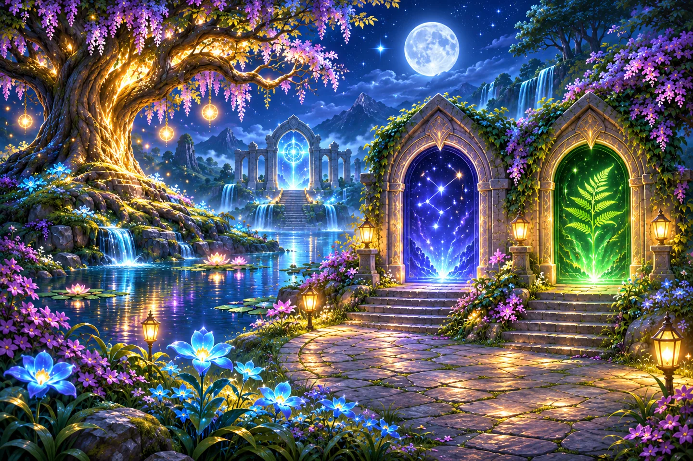
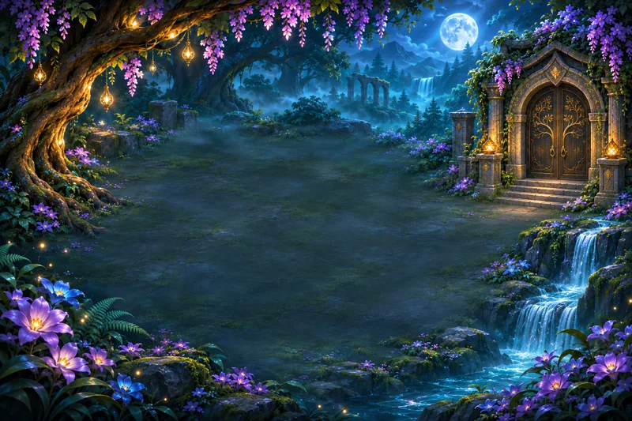
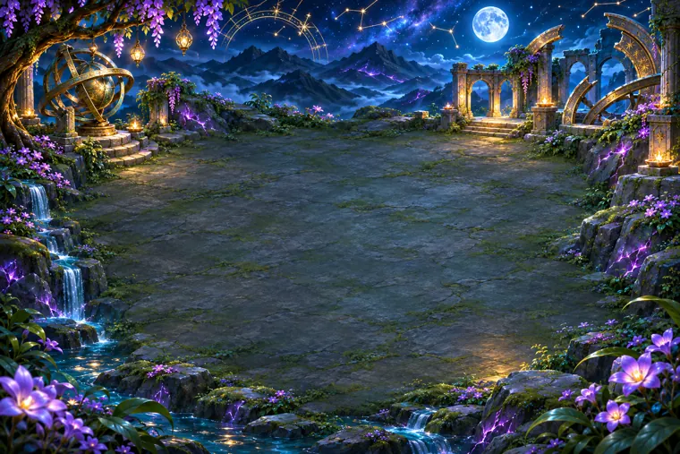
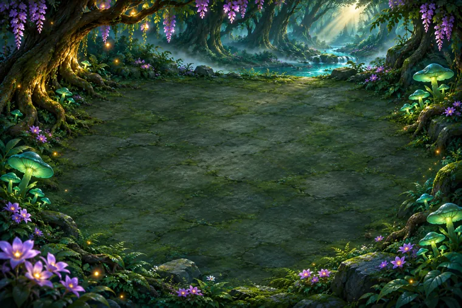
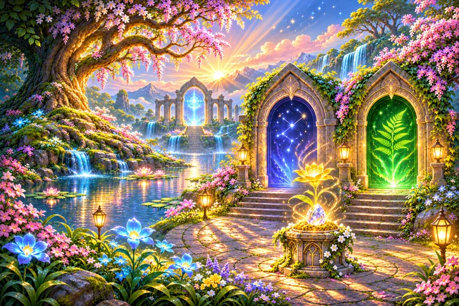

Hành trình Ánh Sáng
Từ tia sáng đầu tiên ở Thung lũng đến hai cánh cửa trong khu vườn và bình minh bên kia rừng.
Bắt đầu ở Thung lũng →
Thung lũngHọc dẫn tia qua gương, lăng kính và cầu.18 màn- Khu vườn bị lãng quênĐánh thức khu vườn để mở hai cánh cửa.4 màn

Tinh TúTách tia để khôi phục bản đồ sao.Sau cánh cửa Tinh Tú
Rừng SâuDẫn ánh sáng qua suối và cửa rễ cây.Sau cánh cửa Rừng Sâu
Bình minhMở ra sau khi thắp sáng cả Tinh Tú và Rừng Sâu.Hồi kết
Ô sáng cổ điển
Chế độ 30 màn bật tắt ô sáng. Chạm một ô để đổi trạng thái các ô liền kề.
30 màn